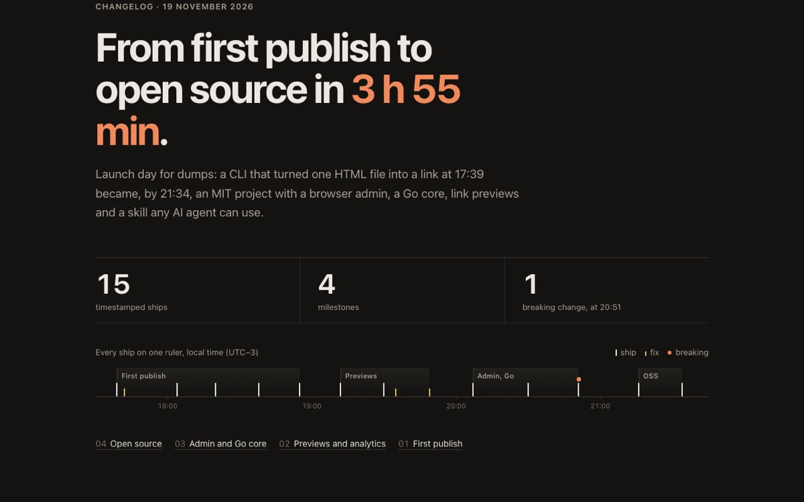
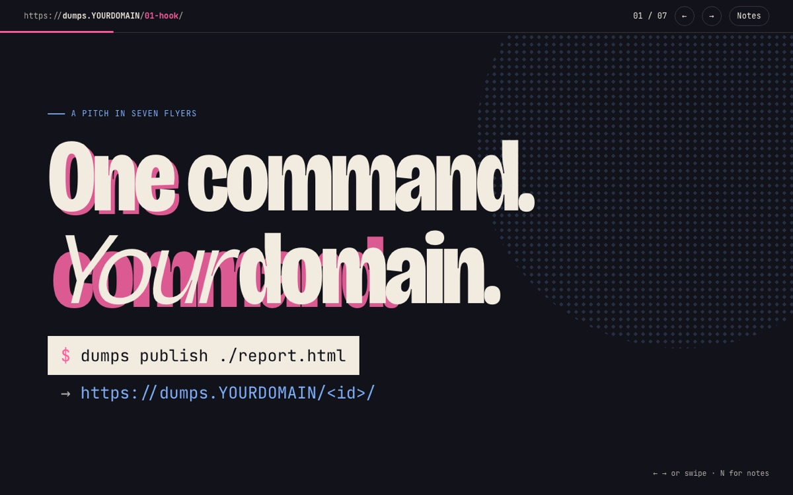
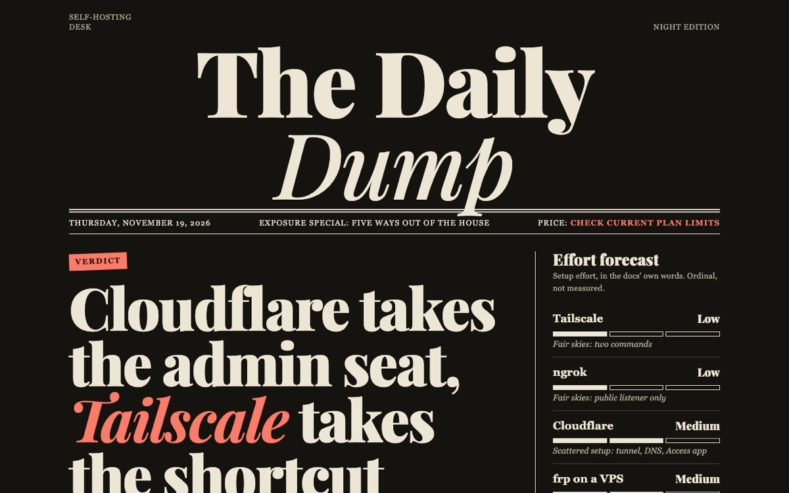
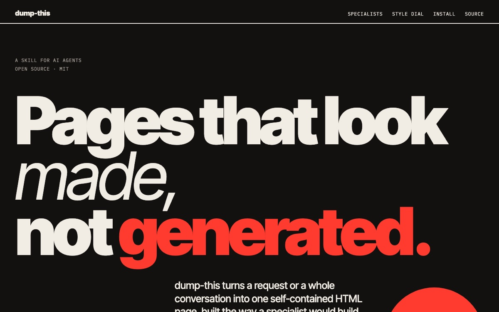
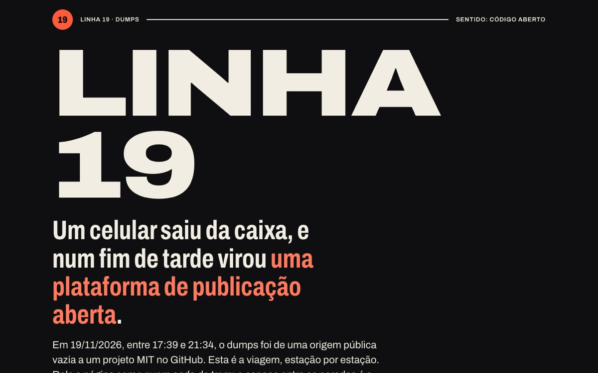

Claude Code
2 commandscurl -fsSL https://grippado.github.io/dumps/dump-this.zip -o /tmp/dump-this.zipunzip -oq /tmp/dump-this.zip -d ~/.claude/skillsThen type /dump-this in a new session.
The style ruler · four levels
Bold: editorial type, confident color, and a grid broken on purpose. Try: “make it nice, or nothing at all”
This same page is shown in bold style.
Choose one of four levels. The selection changes this page's art direction and highlights matching specialists below.
dump-this is a skill for your AI agent. Ask for a page and it casts the right specialist, sets how bold the art direction should be, and hands back one self-contained HTML file: inline CSS and JS, light and dark, readable on a phone. Not the gradient-and-three-cards look every generated artifact has.
An artifact in claude.ai, a canvas in ChatGPT, or a plain file anywhere.
Claude Code, Codex, claude.ai and ChatGPT, from the same skill.
With dumps installed it publishes the page hidden. You review it and press Publicar in the admin.
Name a type, or let the skill pick one from what you ask. Every specialist below made a real example page; open it and judge the work. Billed in order of how far each example turned the dial.
Always
 See the report →
See the report →
Always
 See the doc →
See the doc →
Always

See the changelog →Always

See the slides →Always

See the comparison →Always

See the landing →Always
 See the dashboard →
See the dashboard →
Always

See the story →Choose a level to preview this same page in that art direction. The copy and accessibility stay the same. Say nothing and the skill chooses bold. The matching specialists light up in the cast.
Focus the knob, use arrow keys
Say make it nice
Make the page a specialist would make.
That is the default artifact look. The skill exists to beat it. Every page ends with a one-line colophon naming its level and concept, so the reader learns the dial exists.
From your words, or the type you name. If nothing fits, the technical writer takes the part.
Reads the style rules, the base rules and the specialist's recipe, then writes one page from your request, your file or the conversation. Real data only; a missing fact gets one question, not an invention.
With dumps installed: dumps publish, hidden, until you press Publicar. Otherwise an artifact or canvas, or an index.html file.
Type, topic and, if you want, a level or an art direction. That is the whole script.
/dump-this conservative report for the board about Q3 costs
/dump-this clean changelog of what shipped this week
/dump-this slides from notes.md about the launch
/dump-this compare these three vendors, like a Swiss poster
/dump-this go wild: a dashboard of our usage, as an instrument panel
/dump-this the story of this incident as a newspaper front page
Same skill everywhere. Free, MIT licensed, no account.
curl -fsSL https://grippado.github.io/dumps/dump-this.zip -o /tmp/dump-this.zipunzip -oq /tmp/dump-this.zip -d ~/.claude/skillsThen type /dump-this in a new session.
curl -fsSL https://grippado.github.io/dumps/dump-this.zip -o /tmp/dump-this.zipunzip -oq /tmp/dump-this.zip -d ~/.codex/skillsThen ask for a dump in plain words.
https://grippado.github.io/dumps/dump-this.zipDownload the zip and upload it in Settings, Capabilities, Skills.
https://grippado.github.io/dumps/dump-this-chatgpt.txtPaste the instructions into a custom GPT or a Project.
git clone https://github.com/grippado/dumpscd dumpscli/dumps install-agent allThis also gives the skill a place to publish: your own dumps server, where new pages arrive hidden and wait for your Publicar.
Level 4 avant-garde · concept: the skill as a theatre playbill, its eight specialists billed as the cast, the style dial as the house volume knob · Big Shoulders Display + system serif + system mono.